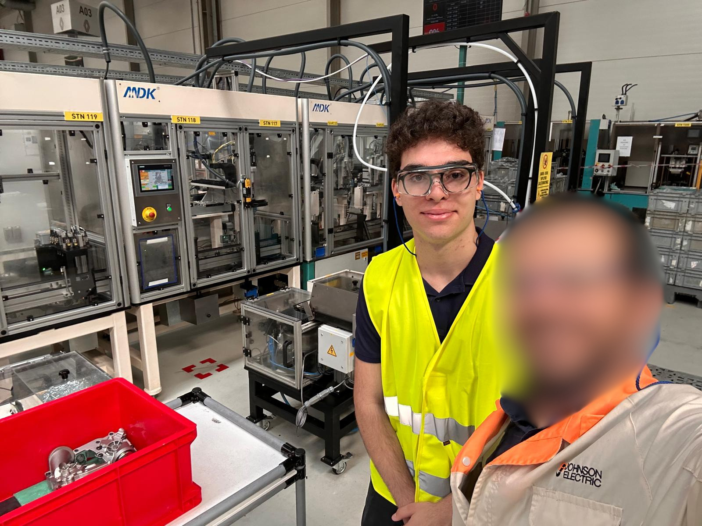

Industrial Project
An analytical role focused on optimizing manufacturing planning through automated tools and structured data architectures.
Role
Project Trainee, Feasibility & Cost AnalysisTimeline
June 10 - July 18, 2025
Process Optimization
Reduced the preparation time of feasibility studies by building an automated assessment tool for new oil pump assembly lines.
Data Architecture
Created a structured database of production line components, including precise costs and delivery times to support early-stage manufacturing planning.
Manufacturing is not just about building parts; it is about building them profitably. My role was positioned precisely at the intersection of production logistics and financial feasibility.
Manual data entry in feasibility studies take significant time. I built an automated assessment tool specifically designed for new oil pump assembly lines, cutting the operational time required for these studies in half.
Designed a standardized pricing and modeling framework for various components. This architecture ensured high consistency and reliability when conducting critical investment evaluations.
Data is useless if it's siloed. I collaborated directly with both engineering and finance departments to align cost assumptions on uniform data, which significantly improved overall planning agility.
I realized that the biggest barrier to rapid decision-making is not a lack of information, but a lack of structured, standardized information. Structuring 40+ components taught me how data architecture drives business speed.
Reducing study preparation from 3 to 1.5 days proved to me that engineering is not just about designing physical products; it's about designing efficient workflows and eliminating repetitive tasks.
""This project shifted my perspective entirely. I realized that industrial success is not only about the product, but also the production line behind it. I learned how rapid, accurate feasibility studies are the true drivers of efficiency and profitability when scaling operations."